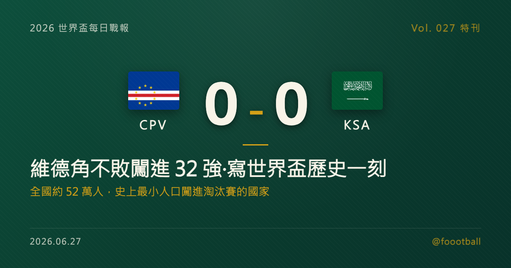

全國約 52 萬人，卻寫下世界盃最大驚奇：維德角不敗闖進 32 強的歷史一刻
2026 世界盃 H 組末輪，首次參賽的維德角 0-0 逼平沙烏地阿拉伯，以三戰全和、3 分、淨勝球 0 排名小組第二，淘汰兩屆世界盃冠軍烏拉圭、晉級 32 強。維德角全國人口約 52.5 萬，是世界盃史上以最小人口國家之姿打進淘汰賽的球隊。這篇特刊講清楚：那一分如何寫進歷史、這個紀錄的真正分寸、一支靠僑民後裔拼起來的球隊，以及童話的下一關——對上梅西與阿根廷。

2026 世界盃特刊｜Vol. 027 番外
有些國家踢世界盃，是為了爭冠軍；有些國家踢世界盃，光是站上這個舞台，就已經是整個國家的勝利。維德角（Cape Verde），屬於後者——只是這一次，他們連後者都超越了。
2026 年 6 月 26 日的休士頓，首次參加世界盃的維德角，靠著一場 0-0 逼平沙烏地阿拉伯的平局，以 H 組第二名闖進 32 強。一個全國人口約 52.5 萬、比台灣任何一個縣市都少的西非島國，在初登場的這一屆，就把自己送進了世界盃的淘汰賽。這一夜值得慢慢說——先說那一分如何改寫歷史，再說這個紀錄真正的分寸，接著看這支「用大西洋拼起來的球隊」是怎麼煉成的，最後，聊聊等在前方的那一關：梅西與阿根廷。
一、那一分：三場和局，不敗晉級
維德角的世界盃小組賽，是一段「沒有贏球、卻從未輸球」的旅程。
首戰，他們 0-0 逼平歐洲冠軍西班牙——那場比賽 40 歲門將 Vozinha 單場 7 次撲救、力保城門不失，是隊史最動人的一夜之一（詳見本站〈40 歲的那面牆〉特刊）。次戰，他們 2-2 戰平烏拉圭，在強敵面前搶下寶貴一分。末戰面對沙烏地，他們只需要一分就能晉級——最終雙方 0-0 互交白卷，這個在任何其他比賽裡都顯得平淡的比分，對維德角而言卻是隊史最重要的一分。
三場小組賽，三場和局，3 分、淨勝球 0，未嘗一敗。最終 H 組排名：西班牙 7 分奪冠，維德角 3 分排名第二，兩屆世界盃冠軍烏拉圭僅 2 分、淨勝球 -1 排名第三出局，沙烏地阿拉伯墊底。值得一提的是，三場比賽他們對西班牙、沙烏地都完成零封，僅在對烏拉圭時失兩球——對一支首次參賽的球隊來說，這條防線的穩定度，遠超外界賽前的預期。
而他們淘汰掉的，是一支什麼樣的對手，更值得被講清楚：烏拉圭，這個只有約 350 萬人口的南美國家，曾兩度捧起世界盃，是世界足壇「以小搏大」的經典代表。如今，換成一個比它更小、剛剛踏上世界盃的島國，把它擠出了 32 強。對維德角而言，與烏拉圭的那場 2-2，正是整段旅程的縮影——落後、追平、再落後、再追平，全隊用一種「絕不認輸」的韌性，把寶貴的一分留在了自己手裡。如果說對西班牙的 0-0 證明了他們守得住，那對烏拉圭的 2-2，則證明了他們扛得住逆境。
一支首次參賽的球隊，全靠和局、不勝而晉級——上一支以這種方式（小組賽三和、不勝）闖進淘汰賽的球隊，要追溯到 1998 年的智利。維德角，把自己的名字接在了那段稀有的紀錄之後。
二、最小的國家，最大的驚奇
維德角這趟旅程之所以被全世界討論，不只因為他們贏了位置，更因為他們是「誰」。
維德角是西非外海、大西洋上的一座群島國家，曾為葡萄牙殖民地，通行克里奧爾語，國土面積僅約 4,033 平方公里，全國人口約 52.5 萬——比美國任何一個州都少。賽前，他們的 FIFA 世界排名僅第 67 位。就是這樣一支球隊，闖進了世界盃 32 強，成為世界盃史上以最小人口國家之姿打進淘汰賽的球隊。
這個紀錄需要把分寸講清楚，才不會被誤讀：論「打進世界盃」本身，冰島（約 34 萬人）、庫拉索（約 15 萬人）等更小的國家都曾做到，只是他們都止步於小組賽；維德角創下的，是能在世界盃淘汰賽舞台上佔有一席之地的「最小人口」新低。換句話說，稀有的不是「來了」，而是「留下來了」。
把這個數字放進對照，更能感受它的份量：52.5 萬人，大約只是台灣一個中型縣市的規模，比美國 50 個州裡人口最少的懷俄明州還要少。就是這樣一個「一座城市」大小的國家，在擴軍到 48 隊、競爭比以往更激烈的這一屆世界盃，硬是擠進了全球前 32 強的行列。在一個普遍由人口大國、足球豪門主導的運動裡，這種「小國突圍」的故事本就稀有；而維德角把它一路延伸到了淘汰賽，稀有度又更上一層。
無論用哪種角度衡量，這都是本屆世界盃最大的驚奇之一。ESPN 形容維德角「締造了世界盃最大的驚奇之一」，半島電視台稱之為一段「童話般的旅程」。對一個多數球迷此前未必能在地圖上指出來的名字而言，這樣的形容，並不誇張。
三、一支用大西洋拼起來的球隊
維德角的奇蹟背後，藏著一個關於「離散」的故事。
這支綽號「藍鯊」（Tubarões Azuis / Blue Sharks）的球隊，國家隊班底橫跨 14 個國家、25 家俱樂部，其中在荷蘭鹿特丹出生的球員，甚至比在首都普拉亞出生的還多。維德角人口雖少，但數百年的航海與移民史，讓維德角後裔散居葡萄牙、荷蘭、法國等地——而足協所做的，就是把這些在歐洲各級聯賽磨練出來的子弟，一個個召回披上藍衫。這是一支真正意義上「用整個大西洋的離散人口拼起來」的隊伍。
隊長 Ryan Mendes 是國家隊出場與進球紀錄保持者，象徵著這支球隊的延續；40 歲門將 Vozinha（本名 Josimar José Évora Dias）在對西班牙一役封神，是整段旅程的精神支柱；邊路有在鹿特丹長大的 Garry Rodrigues，後防則有效力愛爾蘭勁旅的 Roberto「Pico」Lopes、巴黎出生的 Logan Costa 等人。而把這群散落各地的球員捏合成一支「不敗之師」的，是總教練 Pedro「Bubista」Brito——他本身就是前維德角國腳，2020 年起執掌兵符，並在 2025 年當選非洲足協（CAF）年度最佳教練。
天賦從來不是維德角的問題，組織與認同才是；而 Bubista 做到的，是讓一群護照、口音、成長背景各異的球員，在「藍鯊」這面旗幟下，踢出了比任何個體加總都更強的整體。
事實上，維德角能站上世界盃，本身就是一場硬仗換來的。在非洲區資格賽，他們分在 CAF D 組，最終以小組第一直接晉級——力壓傳統勁旅喀麥隆（Cameroon），其中包括一場 1-0 主場擊敗喀麥隆的關鍵勝利，並在最後一輪 3-0 擊敗史瓦帝尼（Eswatini）正式鎖定門票。一支人口五十餘萬的島國，在非洲這片高手林立的賽區裡力壓「非洲雄獅」出線，這份資歷本身，就足以說明他們的晉級絕非僥倖。從資格賽到會內賽，維德角走的是同一條路：靠紀律、靠團結、靠把每一場硬仗都咬下來。
對維德角這樣的國家而言，足球從來不只是足球。散居世界各地的維德角後裔，靠著這支國家隊，找到了一個共同的身分座標——當「藍鯊」在世界盃的舞台上前進，不只是普拉亞的街頭在歡呼，鹿特丹、里斯本、巴黎的維德角社群，也都在為同一面旗幟吶喊。一支用離散人口拼起來的球隊，反過來成了把這群離散的人重新凝聚起來的那條線。這，或許才是維德角這趟世界盃之旅，最動人的底色。
四、童話的下一章：對上梅西與阿根廷
維德角的故事，還沒結束。
依賽程，作為 H 組第二名的維德角，淘汰賽首輪將對上衛冕冠軍阿根廷——據外電報導，比賽訂於 7 月 3 日在邁阿密（Miami Gardens）登場。這意味著，這支大西洋島國，將在世界盃的舞台上，正面迎戰梅西（Lionel Messi）與他的阿根廷。
從紙面實力看，這是一場毫無懸念的對決：衛冕冠軍對上首次參賽、世界排名第 67 的黑馬。但維德角整個小組賽證明的，恰恰是「紙面」未必說了算——他們逼平了歐洲冠軍西班牙，淘汰了兩屆冠軍烏拉圭，靠的不是奇蹟，而是一條紀律嚴明的防線與全隊的凝聚力。
當然，阿根廷是另一個層級的對手。擁有梅西、攻守俱佳、剛在小組賽展現奪冠相的衛冕冠軍，火力與經驗都遠非西班牙、烏拉圭在小組賽的狀態可比；維德角想複製「逼平、零封」的劇本，難度只會更高。面對阿根廷，他們大概率仍是被看好出局的一方；但對一支已經把「不可能」變成「已發生」的球隊來說，沒有人有資格斷言他們走不到下一步。能站上這個舞台與梅西同場，對維德角而言，本身已是另一種形式的加冕。
無論 7 月 3 日的結果如何，維德角都已經贏了。當西班牙、法國、阿根廷這些豪門按部就班地收下席位，維德角用三場和局，為 2026 世界盃寫下了第一個真正意義上的童話。這座大西洋上的小島、這 52 萬人的國家、這支用離散人口拼起來的「藍鯊」，已經把自己的名字，永遠刻進了世界盃的歷史。而接下來的每一場，都是額外的禮物。
常見問題
Q：維德角是怎麼晉級的？他們一場都沒贏？ A：是的。維德角小組賽三場全部踢平——0-0 西班牙、2-2 烏拉圭、0-0 沙烏地阿拉伯，以 3 分、淨勝球 0 排名 H 組第二而晉級。世界盃小組賽看的是三場總積分，勝場不是唯一條件；維德角靠著穩定不敗、加上淨勝球壓過只拿 2 分的烏拉圭，搶下小組第二。這是他們史上首次參加世界盃。
Q：維德角是「最小的國家」嗎？ A：要看怎麼定義。維德角全國人口約 52.5 萬，是世界盃史上以最小人口國家之姿打進淘汰賽的球隊。但論「打進世界盃」本身，冰島、庫拉索等更小的國家都曾做到，只是止步小組賽。所以準確的說法是「打進淘汰賽的最小人口國家」，而非「最小的參賽國」。
Q：維德角淘汰賽對手是誰？ A：作為 H 組第二名，維德角淘汰賽首輪將對上衛冕冠軍阿根廷。據外電報導，比賽訂於 7 月 3 日在邁阿密（Miami Gardens）舉行，這也意味著維德角將正面迎戰梅西領軍的阿根廷。
Tags: 世界盃, 2026世界盃, 維德角, 黑馬, 阿根廷, 童話